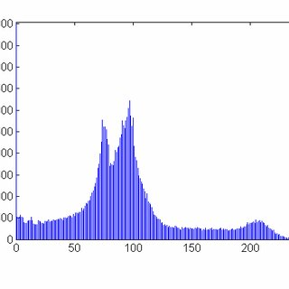

Week 9: Dynamic Range Analysis
Overview: This week’s analysis explores the dynamic range of "Twinkle Twinkle Little Star," focusing on variations in loudness throughout the piece.
Dynamic Patterns
The song maintains a relatively consistent dynamic level, with slight increases during key melodic peaks.
Visualization
The dynamic range visualization shows changes in loudness across time:
 Next Week →